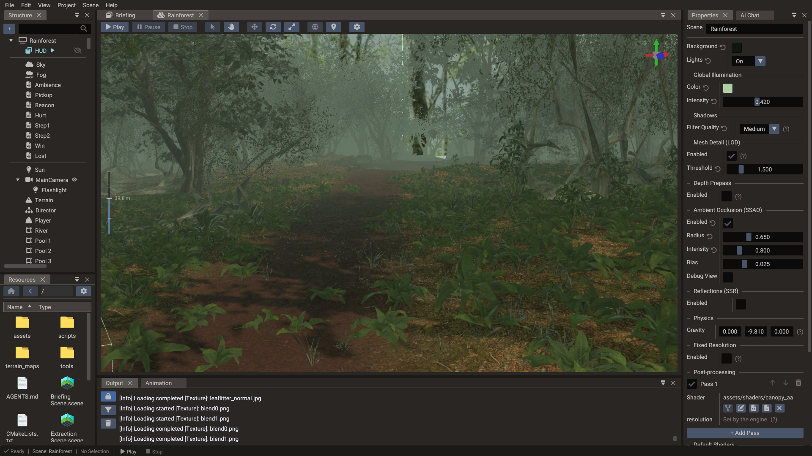
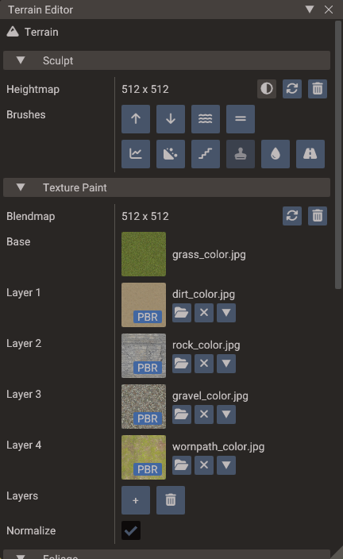

Terrain¶
Quantum renders large outdoor landscapes with a heightmap-based Terrain object. The
terrain is a continuous-LOD quadtree, so the polygon count on screen stays roughly
constant regardless of terrain size, with detail concentrated near the camera.

Terrain anatomy¶
| Input | Purpose |
|---|---|
| Heightmap | Grayscale image that displaces the grid vertically (white = maxHeight) |
| Base texture | The ground texture tiled across the whole terrain |
| Blend maps | Up to three RGB masks; each channel weights one detail layer |
| Detail layers | Up to nine painted surfaces (grass, rock, path, …) mixed over the base |
| Foliage layers | Meshes scattered over the surface from painted density maps |
The heightmap and the blend maps are stretched once over the whole terrain, so they are sampled with clamp-to-edge wrapping: the outer row and column of texels define the border of the terrain instead of blending with the opposite edge. Only the base and detail textures tile.
Detail layers¶
Detail layers are numbered from 1 and grouped in threes: layers 1–3 are weighted by the RGB channels of the first blend map, 4–6 by the second, 7–9 by the third. Whatever weight the layers leave unclaimed goes to the base texture, so an unpainted terrain shows the base alone.
Every map of every layer is uploaded as a slice of one texture array, so the whole terrain costs a single sampler no matter how many layers and maps it uses. Sources are converted to RGBA and resized to a common size, capped at 2048 px — keep source maps at 1024 or below on a heavily layered terrain, or the array grows quickly.
Three things shape how the layers meet on screen:
- Height blending. A detail texture's alpha is read as layer height, not opacity. Where two layers overlap, the taller one takes the contact zone — gravel settles between cobbles instead of cross-fading into them. Fully opaque textures have no height and blend on their blend-map weight alone.
- Triplanar projection on slopes. A flat top-down projection stretches over a cliff, so as the surface turns vertical the layers fade into side projections taken along X and Z.
- Distance tile break. Past a few tiles of distance a second, coarser tiling rate fades in and mixes with the first, breaking up the repeating pattern of tiled ground.
PBR layers¶
A layer starts as a color layer: it blends its texture over the base and leaves every other surface property to the terrain material. Turning on PBR gives that layer its own surface instead.

| Map | Read from | Without it |
|---|---|---|
| Color | RGB, decoded from sRGB and multiplied by the layer tint | White |
| Normal | Tangent-space RGB, projected with the layer | The terrain's own surface |
| Roughness | Green, or the only channel of a grayscale map | The roughness factor alone |
| Metallic | Blue, same fallback | The metallic factor alone |
| Occlusion | Red | Unoccluded |
| Height | Any channel; only biases blending, never geometry | The layer blends flat |
Each map has a factor beside it, so a layer can be authored with factors alone and no maps at all. A packed ORM texture works by assigning the same file to Occlusion, Roughness and Metallic; separate grayscale files work just as well.
Every layer, PBR or not, also has a UV scale and offset that multiplies the shared detail tiling, so one layer can tile finer than its neighbours.
Color layers are left exactly as they were
A terrain with only plain color layers and default tiling renders through the same shader it always did — no added cost. The wider path switches on as soon as one layer turns on PBR or takes a custom tiling. In a mixed terrain, color layers keep blending their texture raw (and their alpha as height) rather than being re-interpreted, so adding a PBR layer never changes how the existing ones look.
Painted layers are written to the G-buffer as well, so screen-space reflections see the same normal, roughness and metallic the lit surface shades with.
Foliage¶
A terrain can carry foliage layers: a mesh, a painted density map, and the rules for scattering it. Instances are not stored in the scene — they are resolved from the density map at runtime, in fixed cells batched into per-chunk instanced entities around the camera, and re-resolved when the camera moves. Each layer filters by ground slope and height, jitters scale and yaw, can lean instances along the surface normal, and has its own draw distance, with instances scaling in over the last quarter of it instead of popping. A min draw distance skips the instances nearer than it, so a copy of a layer with a simpler mesh can take over where the detailed one ends. Cast shadows (default on) puts those instances into the shadow cascades; turn it off on grass-scale scatter so the foliage still draws in the colour pass but skips the extra shadow geometry.
Foliage entities belong to the engine, not to the authored scene: they are not listed in the editor's Structure panel and clicking one selects its terrain.
For props that need to be real entities — collision, scripts, animation, or just a hand-placed look — use the Terrain Editor's object placement brush instead, which parents ordinary models or bundles to the terrain.
Editing terrain in the editor¶
Select an entity with a Terrain component and click Open Terrain Editor in the Properties window. The window paints every map the terrain uses:
| Section | Tools |
|---|---|
| Sculpt | Raise, Lower, Smooth, Flatten, Sharpen, Noise, Terrace, Stamp, Erode, Ramp |
| Texture Paint | Paint the base or any detail layer into the blend maps, optionally masked by slope and height |
| Foliage | Add layers and paint their density maps |
| Objects | Scatter models or bundles as children of the terrain, instanced or as individual entities |
Brushes have configurable size, strength, shape (circle/square), falloff, and an optional grayscale mask. See Terrain Editor for the full window reference.
Creating terrain in code¶
terrain = Terrain(scene)
terrain:setHeightMap("terrain/heightmap.png")
terrain:setTexture("terrain/grass_base.png")
-- Layers 0-2 are weighted by the RGB channels of blend map 0
terrain:setBlendMap("terrain/blendmap.png")
terrain:setTextureLayer(0, "terrain/rock.png")
terrain:setTextureLayer(1, "terrain/grass_detail.png")
terrain:setTextureLayer(2, "terrain/path.png")
-- Layers 3-5 need a second blend map
terrain:setBlendMapIndex(1, "terrain/blendmap1.png")
terrain:setTextureLayer(3, "terrain/snow.png")
-- A layer with its own PBR surface
local mud = TerrainSurfaceLayer()
mud.pbr = true
mud.colorTexture = Texture("terrain/mud_color.png")
mud.normalTexture = Texture("terrain/mud_normal.png")
mud.roughnessFactor = 0.3
mud.uvScale = Vector2(2, 2)
terrain:setSurfaceLayer(4, mud)
-- Dimensions and LOD are properties in Lua
terrain.size = 2000 -- world units per side
terrain.maxHeight = 80 -- world height of a white heightmap pixel
terrain.resolution = 32 -- grid segments per LOD node (multiple of 4)
Terrain terrain(&scene);
terrain.setHeightMap("terrain/heightmap.png");
terrain.setTexture("terrain/grass_base.png");
// Layers 0-2 are weighted by the RGB channels of blend map 0
terrain.setBlendMap("terrain/blendmap.png");
terrain.setTextureLayer(0, "terrain/rock.png");
terrain.setTextureLayer(1, "terrain/grass_detail.png");
terrain.setTextureLayer(2, "terrain/path.png");
// Layers 3-5 need a second blend map
terrain.setBlendMap(1, "terrain/blendmap1.png");
terrain.setTextureLayer(3, "terrain/snow.png");
// A layer with its own PBR surface
TerrainSurfaceLayer mud;
mud.pbr = true;
mud.colorTexture = Texture("terrain/mud_color.png");
mud.normalTexture = Texture("terrain/mud_normal.png");
mud.roughnessFactor = 0.3f;
mud.uvScale = Vector2(2, 2);
terrain.setSurfaceLayer(4, mud);
terrain.setSize(2000.0f);
terrain.setMaxHeight(80.0f);
terrain.setResolution(32);
Terrain derives from Mesh, so material, shadow, and texture APIs from
Mesh apply as well — setTexture sets the base ground
texture through the material.
setTextureLayer sets only a layer's color, so it still does what it always did and
leaves the rest of a PBR layer's surface alone. setTextureDetailRed / Green / Blue
are layers 0, 1 and 2 under the names they had when a terrain had a single blend map.
setLayerFromMaterial fills a layer from a Material
in one call. Foliage layers have no runtime setters — they are authored in the editor and
read back from the component.
LOD tuning¶
The terrain is a quadtree: rootGridSize × rootGridSize root nodes cover the whole
terrain, and each node subdivides into four until levels is reached. Every node is
drawn with the same grid of resolution × resolution segments, so a deeper node covers
less ground with the same number of triangles — that is where the added detail comes
from.
| Property | Controls |
|---|---|
resolution |
Grid segments per side of every node — higher = denser geometry everywhere |
rootGridSize |
Root nodes per side of the terrain — the coarsest node is size / rootGridSize |
levels |
Quadtree depth — each level halves the node size, so the leaf node is size / (rootGridSize × 2^(levels-1)) |
textureBaseTiles |
How many times the base texture repeats across the terrain |
textureDetailTiles |
Repeat count for the detail textures |
Start with the defaults; raise levels when the ground near the camera looks too coarse,
and resolution when it still does at the highest level. Both are paid for in nodes and
triangles: the quadtree materializes rootGridSize² × (4^levels - 1) / 3 nodes, so
levels grows the node count exponentially and the engine refuses to build a terrain
past its node budget (it logs an error asking for a lower Levels or Root Grid
Size).
Resolution is rounded to a multiple of 4
Nodes stitch to their coarser neighbours by morphing only their odd vertices, and the
internal half-resolution grid (resolution / 2) has to keep the same parity. The
engine rounds resolution to the nearest multiple of 4 (minimum 4), writes the
rounded value back to the component, and logs a warning. Set it in steps of 4 — the
editor's Resolution field already drags that way — or the value you typed will
not be the value you get.
LOD ranges¶
By default (autoSetRanges) the engine derives the distance ranges from the node sizes
themselves: the first range is twice the leaf node size and each following level doubles
it, so every level shows roughly the same amount of detail on screen no matter how large
the terrain is. Only the coarsest range is stretched to the camera's far clip, so a
terrain farther away than its own size still renders.
Terrain collision¶
For physics, add a Body3D with a height field shape to the terrain entity — see
Physics. Keep the visual resolution and collision resolution consistent so
objects rest on the visible surface.
See also¶
- Terrain Editor — sculpting, painting, foliage and object placement
- Terrain — full API reference
- 3D Graphics — lighting, materials, sky, and fog
- Physics — height field collision